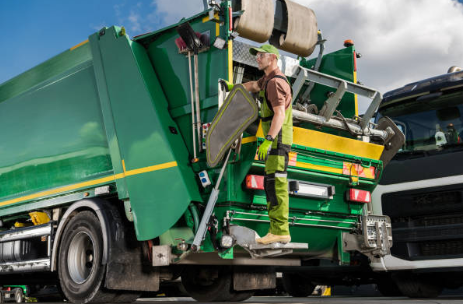

Gestión inteligente de residuos urbanos
Administrá contenedores, incidencias, flota y recursos desde un solo sistema. Seguimiento en tiempo real para una ciudad más limpia y organizada.

La recolección de residuos, sin un sistema claro
Contenedores desbordados sin aviso, cuadrillas sin rutas definidas, reclamos de vecinos que se pierden y datos que nunca llegan a un informe. SiGeRU centraliza toda esa información para que la gestión municipal sea más eficiente.
Todo lo que necesitás en un solo lugar
Contenedores
Alta, baja y modificación. Ubicación, estado y tipo de residuo en tiempo real.
Incidencias
Registrá roturas, desbordes y faltas de recolección. Seguimiento hasta la resolución.
Gestión de flota
Inventario de camiones, mantenimiento preventivo y asignación de rutas.
Reportes y estadísticas
Zonas críticas, tiempos de resolución y frecuencia de recolección.
Mapa interactivo
Visualizá contenedores, incidencias, centros de acopio y camiones en el mapa.
Cómo funciona
- 1. Se detecta una incidencia — rotura, desborde o falta de recolección.
- 2. Se asigna una cuadrilla — responsable de resolverla según la zona.
- 3. Se resuelve el problema — el estado pasa de abierta a en curso y luego a resuelta.
- 4. Queda en el historial — disponible para consulta y estadísticas futuras.
Pensado para todos los actores del sistema
Administrador municipal
Supervisa el sistema completo y accede a todos los reportes.
Cuadrilla de recolección
Recibe rutas asignadas y actualiza el estado de las incidencias.
Operarios de vertederos
Gestionan capacidad, maquinaria e ingreso de residuos.
Vecinos
Pueden reportar incidencias y hacer seguimiento de sus reclamos.